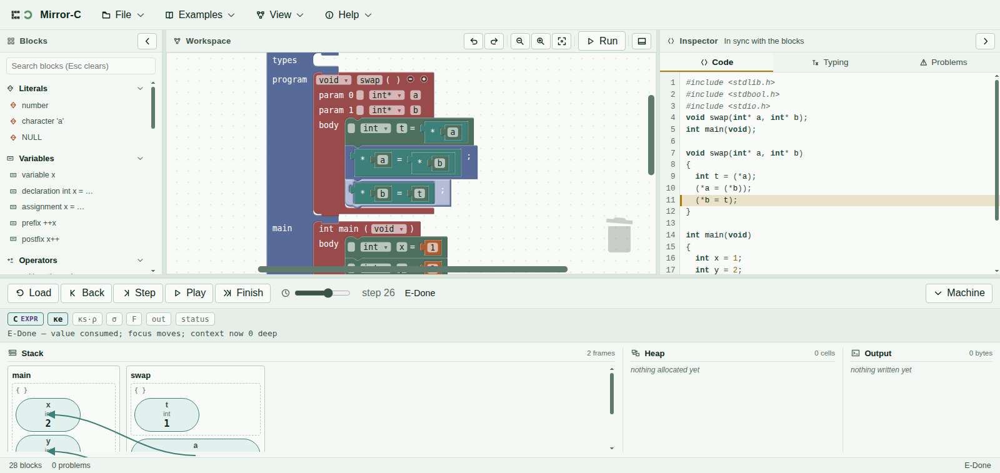

C, with the machine drawn
Mirror-C is a block-based editor for a fragment of C, attached to a machine that executes your program one small step at a time and draws what it is doing. Not a diagram of what C is like — the actual state the program is in, at the step you are looking at.
What Mirror-C is
Most explanations of pointers come with a picture and a promise: the picture is drawn by hand, and you are asked to believe it describes the program. Mirror-C removes the promise. The picture is computed from the same machine that produces the program's output, so if the picture and the output ever disagreed, that would be a defect rather than a simplification.

swap's parameters land on main's cells, and
x already holds the new value while y does not yet.Three things follow from that, and they are the reason to use it:
- Pointers are edges, not numbers. You never see
0x7ffc9044. A pointer is drawn as an arrow to the cell it points at, because the identity of the cell is the address. Two pointers to one cell is two arrows meeting — aliasing becomes something you can see rather than something you have to infer. - A cell's width is its type's size. A
charcell is drawn a quarter the width of anintcell. That is not decoration; it issizeof, on screen. - Dead cells stay put. Addresses are never reused. When a frame returns its cells are marked dead rather than removed, so a pointer left over from a returned function keeps pointing at something visibly dead instead of silently becoming valid again.
The workbench
Four areas, and you can hide any of them from the View menu.
| Area | What it is for |
|---|---|
| Blocks, on the left | The palette. Drag a block into the workspace, or search it by name. Sockets only accept the category they want, so a shape that will not connect is telling you something. |
| Workspace, in the middle | Your program. Two regions: the function definitions, and main. |
| Inspector, on the right | Three tabs. Code is your program as C text, kept in step with the blocks, and it highlights the line the machine is executing. Typing shows how a type is derived. Problems lists anything wrong. |
| Machine, along the bottom | The controls — Load, Back, Step, Play, Finish — and the picture itself. |
Stack, Heap, Output
The machine panel is three regions side by side, and each says how much is in it.
- Stack. One box per live function call, innermost on the right. Inside each box are its cells, with the variable's name, its type and its current value. Empty at the start: 0 frames.
- Heap. Whatever
mallochas handed out andfreehas not taken back. Empty at the start: nothing allocated yet. - Output. Exactly what
printfhas printed so far — and it un-prints when you step backwards, because the output is part of the machine's state rather than a log beside it.
Above the regions, a line of prose names the rule the machine just applied and says in words what it did.
A program that stops has a reason, and the reason has a name
When a C program does something undefined, real compilers are free to do anything at all, which is exactly why undefined behaviour is hard to teach. Mirror-C stops instead, and says which of a fixed list of things happened: following a null pointer, using a pointer into a frame that has already returned, using memory after it was freed, reading a cell that was never written.
A program Mirror-C stops on may well run and print something plausible under gcc or clang. That is the point: it is undefined, so both behaviours are allowed, and the one that looks fine is the more dangerous of the two.
The example library
Twenty-six programs under Examples, from three lines to a linked list, each with a sentence saying what it is for. Hovering one previews that sentence; loading it needs a click, so you can read your way down the list without replacing your work. If the workspace already has blocks it asks before replacing them, and one Undo brings the previous program back.
If you only run one, run The swap that does nothing and then The swap that works. They are the same three statements with one type changed, and the pictures are not alike at all.